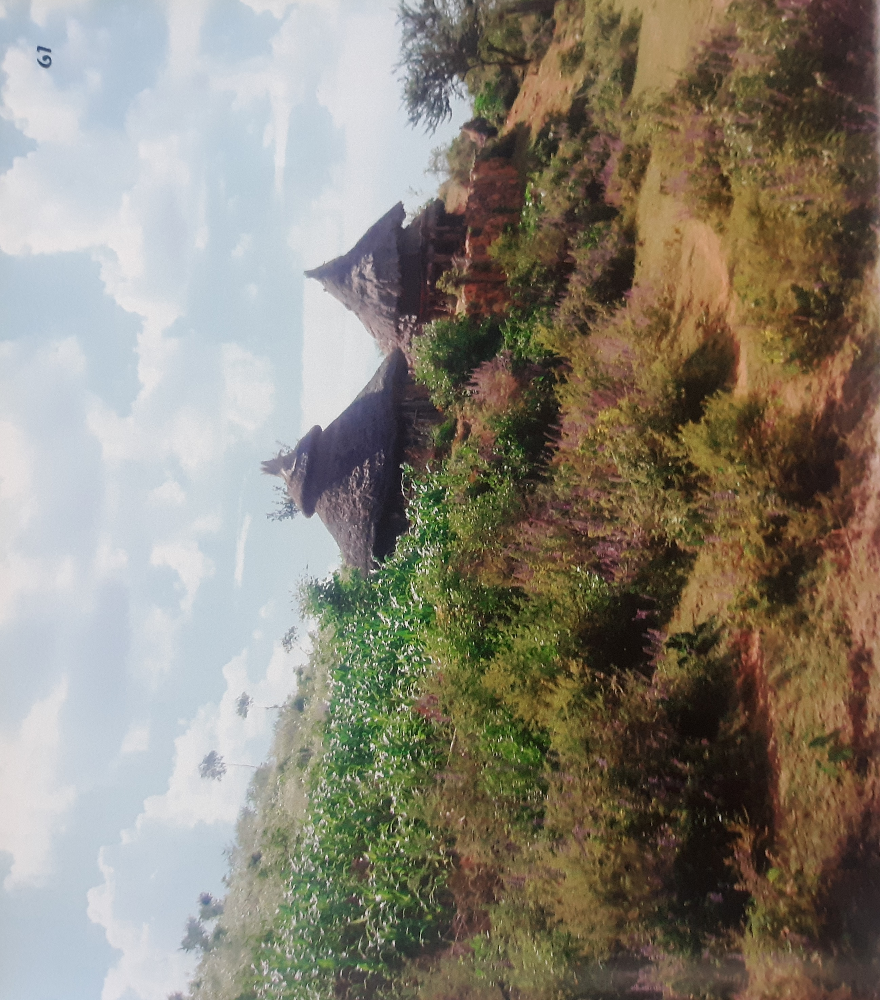

Ethiopia is the land of the origin of human kind. Lussy, the earliest human ancestor is found in Ethiopia. Her remains are kept in museums and visiting sisters such as semera, afar regional state and at the major archeological site in the capital city, there lots of tourist destination in all parts of Ethiopa. The rockheulen church at Liability the Gonder Castel, the Axumit Oblik, the Harar walls of the Amirs, sotomas cave at Bale and Various sites are tourists attraction our mulit-cultural traditional food, clothing, shelters and traditional Danas are tourist attractions. Ethiopia is a country of long traditions of written cultures. Many ancient scriptures are found in the country. The book of Henok one of the major books in the Bible is found in Ethiopia. Ethiopians modern are has also produced a number of writings “The History of Modern Abyssinia” is writer in 19 th country and many more studies done on diversity of Ethiopia are found in modern Libraries and archives. At these attractions are menu for investors work in this area. They could benefit a lot by helping the development of our ancient civilization. At Ethio-Horn Multi sector Consultancy facilitate investors working in Tourism professionally.


Ehiopia is the oldest independent country in Africa. The discovery of Lucy. A 32 millions years old skeleton connects Ethiopia to the very beginning of humanity. The rich history of Ethiopia makes it a unique place to visit. Toursits who are interested in the history of the country are encouraged to take a path designed to highlight the ancient civilization of Axum, the architectural wonders of Lalibela and the imposing castles of Gonder. This section features: Axum, a clear indication of advanced ancient civilization-Axum Tsion Maryam: the Chapel of the Tablet, the sanctuary of th original Ark of the Covenant- the ancient ruins of Queen os Sheb’s Palace-Abraha Atsabaha a 10th century monastery- The Debre Damo Monastry, a sign of magnificent devotion-The adwa mountains, where Ethiopia defeated the Italian army – Lalibela, a town of architectural wonders- Asheten Maryam and Ne Akute Le Abe, hidden jewels of Chiistianity- Abune –Eyesus Moa Ministry in Hayk, a place to witness a lifelong dedication monks and nuns Castles in Gonder-Sof Umar Caves,spectacular underground caverns-Rimbaud Center, A museum in Harrar dedicated to the life of poet Arthur Rimbaud.
Visiting Ethiopia's vast natural beauty is like immersing yourself in imagination. The remarkable lakes, falls, mountains and valleys are beyond what a wide-angle lens can capture. Ethiopia is undoubtedly one of a Mothe Nature's high quality stores. From the beautiful year-round weather to the lush and picturesque landscapes, it is showered with breathtaking compositions. The native animals further enrich visits to places like the Bale Mountains National Park.

Ethiopia offers an abundance of landscapes. The combination of frequent clear weather , natural architecture, and abundant observation points can easily help you loose yourself in nature.
Ethiopia practice a variety of religions, but most are Orthodox Christian or Muslims. The influence of Cristianity in Ethiopia is expansive and is reflected in daily social and cultural behaviors.
The assembly of an early morning market in Chencha and the cultural dance and bull-jumping ceremony of the Hammer people are example indicators of some of the unscripted and magnificient events.
One advantage of Ethiopia's diverse culture is its peoples's equally distinct ways of life.
Most towns and villages in Ethiopia have designated days for local markets. The dynammic nature of all markets makes them prime places to visit. Some people travel long distances to markett goods, while others casually stroll to bask in the energy of the market scene.
SELESHI BEKELE seleshibekele19@gmail.com Mob +251911139827
Addis Ababa, Ethiopia